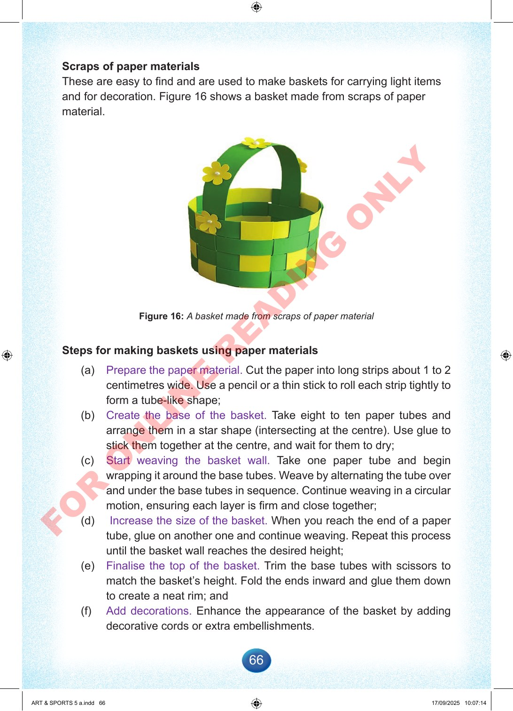

66
Scraps
of
paper
materials
These
are
easy
to
find
and
are
used
to
make
baskets
for
carrying
light
items
and
for
decoration.
Figure
16
shows
a
basket
made
from
scraps
of
paper
material.
Figure
16:
A
basket
made
from
scraps
of
paper
material
Steps
for
making
baskets
using
paper
materials
(a)
Prepare
the
paper
material.
Cut
the
paper
into
long
strips
about
1
to
2
centimetres
wide.
Use
a
pencil
or
a
thin
stick
to
roll
each
strip
tightly
to
form
a
tube-like
shape;
(b)
Create
the
base
of
the
basket.
Take
eight
to
ten
paper
tubes
and
arrange
them
in
a
star
shape
(intersecting
at
the
centre).
Use
glue
to
stick
them
together
at
the
centre,
and
wait
for
them
to
dry;
(c)
Start
weaving
the
basket
wall.
Take
one
paper
tube
and
begin
wrapping
it
around
the
base
tubes.
Weave
by
alternating
the
tube
over
and
under
the
base
tubes
in
sequence.
Continue
weaving
in
a
circular
motion,
ensuring
each
layer
is
firm
and
close
together;
(d)
Increase
the
size
of
the
basket.
When
you
reach
the
end
of
a
paper
tube,
glue
on
another
one
and
continue
weaving.
Repeat
this
process
until
the
basket
wall
reaches
the
desired
height;
(e)
Finalise
the
top
of
the
basket.
Trim
the
base
tubes
with
scissors
to
match
the
basket’s
height.
Fold
the
ends
inward
and
glue
them
down
to
create
a
neat
rim;
and
(f)
Add
decorations.
Enhance
the
appearance
of
the
basket
by
adding
decorative
cords
or
extra
embellishments.
ART
&
SPORTS
5
a.indd
66
ART
&
SPORTS
5
a.indd
66
17/09/2025
10:07:14
17/09/2025
10:07:14
F
O
R
O
N
L
I
N
E
R
E
A
D
I
N
G
O
N
L
Y